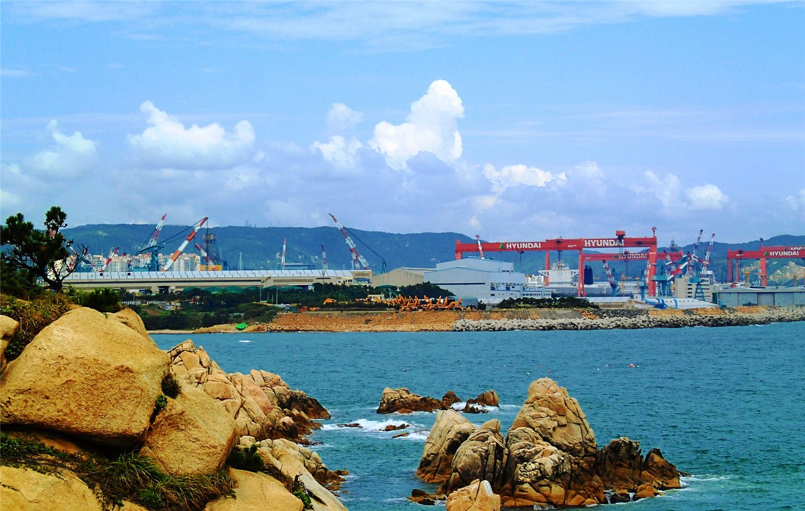
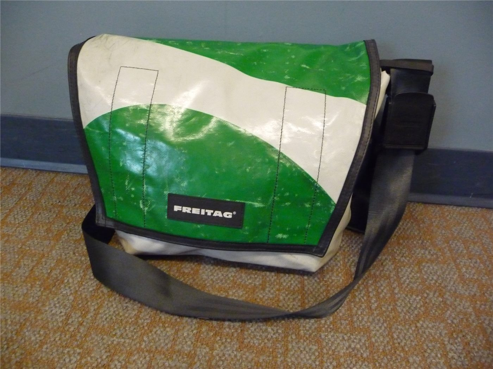

橋미국
미국트럼프 행정부 동향… 정보수장 교체·법무 정책에 시선
백악관이 국가정보국장 대행을 새로 지명하고, 법무부는 일부 정책 방향을 정리했다. 대외·통상 변수도 화인 경제에 파급.
백악관이 국가정보국장 대행을 새로 지명하고, 법무부는 일부 정책 방향을 정리했다. 대외·통상 변수도 화인 경제에 파급.

EU 지도자들이 우크라이나 지원, 2028~2034 예산, 방위·이민을 의제로 올렸다. 올해 회원국 8곳이 총선을 치른다.

7일간 본토·카나리아 제도 순방.

그레이트니코바르 섬 항만·공항·신도시 계획.

미국 연방대법원이 임기 마지막 날, 출생에 따른 시민권을 제한하려는 행정명령에 제동을 걸었다. 미국 헌법이 보장해 온 ‘출생 시민권’ 원칙을 둘러싼 오랜 논쟁에서 중대한 분기점이 됐다.
미국 연방대법원이 각 주(州)가 트랜스젠더의 학교 체육대회 참가를 금지할 수 있다는 취지의 판단을 내렸다. 정체성·공정성 논쟁이 다시 불붙을 전망이다.

베네수엘라 북부를 강타한 두 차례의 강진으로 최소 188명이 숨지고 1,500여 명이 다친 것으로 집계됐다. 구조와 의료 지원이 시급한 상황이다.

미국과 이란 사이의 정전 합의가 강한 긴장 속에 흔들리고 있다. 양측이 무력 시위를 주고받으며, 추가 협상 지속 여부가 시험대에 올랐다.

나이지리아에서 무장 세력이 학교를 습격해 3명이 숨지고 학생 37명이 행방불명됐다. 학교를 노린 범죄에 국제사회의 우려가 커지고 있다.

미국 노스캐롤라이나주의 한 교도소에서 폭동이 발생해 다수의 죄수가 교도관을 인질로 잡는 사태가 벌어졌다. 연방 당국까지 동원돼 진압에 나섰다.

프랑스가 셰인(Shein)과 테무(Temu) 등 ‘초패스트패션’을 겨냥한 규제 입법에 나섰다. 환경 부담과 과잉 소비를 줄이겠다는 취지다.

유럽 증시가 중동 평화 기대와 인공지능(AI) 열풍에 힘입어 강세를 보였다. 다만 일각에서는 반도체주의 과열을 경계하는 목소리가 나왔다.

우크라이나가 러시아의 공격에 무인기(드론)로 응수하며 양측의 피해가 보고됐다. 정전 논의가 거론되는 가운데서도 전선의 긴장은 이어지고 있다.

이스라엘 내각이 1차 세계대전 당시 오스만 제국의 아르메니아인에 대한 폭력을 ‘제노사이드(집단학살)’로 규정하는 방안을 승인했다. 이스라엘과 튀르키예 관계 악화가 배경으로 거론된다.

모나코에서 폭발물로 3명이 다친 사건과 관련해 현지 검찰이 용의자가 단독으로 범행했으며 아직 붙잡히지 않았다고 밝혔다. 부상자 중에는 우크라이나 사업가로 알려진 인물이 포함됐다.

‘취임 첫날 해결하겠다’던 공약들이 현실의 벽에 부딪히고 있다. 출생 시민권 제한과 관세 정책 등에서 약속과 실제 사이의 간극이 드러난다.

프랑스의 아프리카 내 영향력이 예전 같지 않다는 분석이 나온다. 옛 식민 종주국의 위상이 흔들리며 역내 외교 지형이 재편되고 있다.

인도 서벵골주에서 집권당이 교체되는 선거 결과가 나왔다. 15년 만의 정권 교체로, 개표 과정에서 지지자 간 충돌도 빚어졌다.

이스라엘과 레바논의 무장정파 헤즈볼라 사이의 무력 충돌이 접경 지역에서 이어지고 있다. 미·이란 정전 논의와 별개로 레바논 전선의 긴장은 가라앉지 않고 있다.

도널드 트럼프 미국 대통령이 미국·멕시코·캐나다협정(USMCA)을 갱신하지 않겠다고 밝혔다. 협정 발효 6년 만에 북미 자유무역의 근간이 흔들리며 세계 교역 질서에 파장이 예상된다.

카타르 총리가 미국 특사들과 회동하는 등 중동 중재 외교가 이어지고 있지만, 이란은 레바논에서의 적대행위 중단과 미국의 동결자금 해제 전에는 최종 협상을 시작하지 않겠다는 입장을 고수하고 있다.

베네수엘라를 강타한 쌍둥이 지진의 사망자가 1,400명을 넘어섰다. 여진과 기반시설 붕괴 속에 국제사회의 구호 활동이 본격화되고 있다.

남아프리카공화국에서 반이민 시위가 여러 도시로 번지며 유혈 사태로 치닫자, 정부가 전국에 경찰 수천 명을 배치했다.

유럽을 덮친 기록적 폭염으로 프랑스에서 약 1,000명의 초과사망이 발생한 것으로 집계됐다. 네덜란드는 사흘 연속 35도를 넘는 사상 첫 '슈퍼 폭염'을 기록했다.

볼로디미르 젤렌스키 우크라이나 대통령이 스웨덴산 그리펜E 전투기 16대 구매 계약 체결을 발표했다. 같은 시기 양측의 드론 공방은 한층 격화되고 있다.

가자지구 평화 협상이 교착 상태를 이어가고 있다. 마코 루비오 미국 국무장관이 하마스의 무장해제 가능성을 거론하며 압박 수위를 높이자, 하마스는 기존 합의 이행이 먼저라며 반발했다.

일본 하마오카 원자력발전소에서 데이터 부정 문제가 불거져 일본 사회가 술렁이고 있다. 원전 재가동 확대 흐름 속에 안전 데이터의 신뢰성이 다시 도마에 올랐다.

도널드 트럼프 미국 대통령이 새로 개조된 보잉 747 신형 에어포스원을 타고 첫 비행에 나섰다. 목적지는 시어도어 루즈벨트 대통령 도서관 개관식이 열린 노스다코타주 메도라였다.

러시아-우크라이나 전쟁의 양측 사상자가 200만 명을 넘어섰다는 미국 싱크탱크의 분석이 나왔다. 러시아군 사상자가 140만 명에 달한다는 추산이다.

기록적 열파가 지나간 프랑스에서 이번에는 남부 지역 산불로 3,000명에 가까운 주민이 대피했다고 自由時報가 외신을 인용해 전했다. 유럽의 여름 재해가 폭염에서 산불로 번지는 양상이다.

미국이 7월 4일 건국 250주년을 맞는 가운데, 기록적 폭염 속에서도 대대적인 기념 행사 흥행에 총력을 기울이고 있다고 조선일보가 전했다.

미국의 한반도 전문가 빅터 차가 “한국이 우크라이나를 지원하지 않으면 러시아가 북한 지원을 중단할 수도 있다”는 취지의 견해를 밝혔다고 조선일보가 전했다.

세계보건기구(WHO)가 크루즈선에서 발생한 한타바이러스 유행의 종료를 선언했다고 自由時報가 전했다. 마지막 접촉자의 검사 결과가 음성으로 확인됐다.

미국이 동결 자금 해제를 조건으로 호르무즈 해협 통항 정상화를 제안했지만 이란이 거부했다. 오만이 낸 중재안도 벽에 부딪히며 해협을 둘러싼 대치가 길어지고 있다.

나토 정상회의를 앞두고 유럽 각국이 방위 지출과 무기 구매를 확대하며 미국 달래기에 나섰다는 분석이 나왔다. 미국의 안보 부담 재조정 요구가 배경이다.

유럽을 덮친 대규모 열파가 전력망·노동 환경·도시 인프라의 취약점을 한꺼번에 드러냈다는 심층 분석이 나왔다. 폭염이 일회성 재해를 넘어 유럽 경제의 구조적 시험대가 되고 있다는 지적이다.

미국 독립기념일 연휴와 월드컵 경기, 유명인 결혼식 등 대형 행사가 한꺼번에 겹치며 뉴욕의 치안·경비 부담이 최고조에 달했다. 시 당국은 가용 경찰력을 총동원하고 있다.

프랑스가 국보급 문화재를 영국 전시에 대여하기로 하면서 문화재 안전을 둘러싼 논쟁이 일고 있다. 이송·보관 과정의 위험과 문화 교류의 가치가 맞서는 모양새다.

이란 최고지도자 알리 하메네이의 국장(國葬)이 하루 앞으로 다가왔다. 우호국 정상급 인사들이 속속 테헤란에 모여들고, 이란 당국은 장례 당일 수도 영공을 전면 폐쇄하기로 했다. 최고지도자의 죽음 앞에서 이란 신정체제의 결속력이 시험대에 올랐다는 평가가 나온다.

독일 검찰이 2022년 발트해 노르트스트림 가스관 폭파 사건을 우크라이나 정부의 지시에 따른 공작으로 결론 내렸다. 3년 넘게 이어진 수사가 유럽 안보 지형에 민감한 파장을 던지고 있다.

일본이 영주권 취득이나 귀화 전에 일본어 능력을 갖추도록 요구하는 새 이민 제도를 추진한다. 외국인 정주가 늘어나는 가운데 ‘통합’ 요건을 강화하는 흐름이다.

도널드 트럼프 미국 대통령과 베냐민 네타냐후 이스라엘 총리가 전화 통화를 하고 가까운 시일 내 만나기로 했다. 트럼프 대통령은 미국과 이란 사이에 전쟁은 없었으며 ‘탈핵화’ 작전이 있었을 뿐이라는 주장을 고수했다.

미국이 미국·멕시코·캐나다협정(USMCA)의 연장을 거부했다고 環球網이 전했다. ‘제조업 미국 회귀’ 기조 속에 북미 공급망의 안정 기대가 흔들리고 있다.

하메네이 전 최고지도자의 국장을 하루 앞둔 이란 지도부가 “미국은 패배했다”며 “합의를 어기면 대응을 재개하겠다”고 경고했다고 경향신문이 보도했다. 추모 국면에서도 대미 강경 메시지로 내부 결속을 다지는 모습이다.

맘다니 뉴욕시장이 폭염 속 전력난을 우려해 에어컨 설정 온도를 25.6도(78°F)로 높여 달라고 당부하자, 공화당이 ‘사회주의식 통제’라며 맹공을 퍼부었다고 조선일보가 보도했다.

기록적 폭염이 덮친 유럽에서 에어컨 확보 경쟁이 벌어지고 있다. 聯合報는 전문가들을 인용해 ‘냉방 격차’가 근로 생산성과 경제 경쟁력의 격차로 이어진다는 경고를 전했고, 環球網도 유럽의 냉방 인프라 부족을 짚었다.

일본이 공격형 무기의 해외 시험을 빈번하게 진행하며 ‘재군사화’ 진행이 빨라지고 있다는 경계론을 環球網이 제기했다. 장사정 미사일 등 반격 능력 확보가 논거로 제시됐다.

미국에서 출생시민권(속지주의 시민권)을 둘러싼 공방이 다시 달아오르고 있다. 環球網은 이 논쟁이 이민·정체성·헌법 해석을 둘러싼 미국 사회의 깊은 균열을 비추는 축소판이라고 짚었다.

트럼프 미국 대통령이 인공지능(AI)으로 만든 영상에서 의사로 분장해 자신을 비판해 온 영화계 인사들을 “전부 병이 있다”고 비꼬았다고 聯合報가 보도했다. 정치 공방에 AI 합성 영상이 일상적으로 동원되는 시대상을 보여 준다.

남아프리카공화국에서 외국인 배척 폭력과 무증서(미등록) 이민자 추방 요구가 확산되고 있다고 聯合報가 심층 보도했다. 경제난 속에 이민자가 국가 위기의 희생양이 되고 있다는 지적이다.

크로아티아 두브로브니크를 찾는 방문객 대부분이 성벽 산책로만 돌고 떠나지만, 도시의 진면모는 ‘천상 예루살렘’을 구현하려 한 중세 도시계획에 있다고 조선일보가 기행 기사로 소개했다.

다카이치 사나에 일본 총리가 인도와의 협력 강화로 중국을 견제하려 한다는 관측에 대해, 중국 학계에서 “‘라인제화(인도를 끌어들여 중국을 견제)’는 실현되기 어렵다”는 분석이 나왔다고 環球網이 보도했다.

서방 제재가 이어지는 가운데 러시아가 ‘외교 돌파구’의 우선 방향으로 아세안(동남아국가연합)을 겨냥하고 있다는 분석을 環球網이 실었다.

미국이 7월 4일(현지시간) 독립선언 250주년을 맞았다. 전국 곳곳에서 사상 최대 규모의 기념 행사가 열렸고, 라이칭더 대만 총통 등 각국 지도자의 축하 메시지가 이어졌다. 축포 뒤에는 관세·이민·기술 패권을 둘러싼 논쟁도 함께 놓여 있다.

이란 최고지도자 알리 하메네이의 국장이 시작됐다. 붉은 깃발을 든 조문 인파가 ‘복수’를 외치는 가운데, 트럼프 미국 대통령은 장례 기간 미·이란 간 교전은 없을 것이라고 밝혔다.

트럼프 대통령 일가가 암호화폐 사업으로 큰 수익을 올린 반면, ‘트럼프 밈코인’을 산 100만 명대 투자자 다수는 큰 손실을 봤다는 집계가 나왔다고 聯合報가 전했다.

실리콘밸리 감원 물결의 조짐이 일찍부터 있었다는 진단과 함께, 메타에서 물러난 AI 분야 인사가 “(이번 감원은) 첫 총성일 뿐”이라고 말했다고 聯合報가 전했다.

암호화폐 채굴업체들이 보유한 전력·부지·냉각 설비를 앞세워 AI 데이터센터로 사업을 전환하고 있다고 조선일보가 전했다.

러시아가 미사일과 드론 약 600발을 동원해 우크라이나 수도 키이우를 밤새 공습, 최소 27명이 숨지고 90여 명이 다쳤다. 개전 이후 수도를 겨냥한 가장 치명적인 공격 중 하나로 기록됐다고 CNN 등이 보도했다.

제36차 나토 정상회의가 오는 7~8일 튀르키예 앙카라에서 열린다. 방위비 분담과 우크라이나 지원, 중동 정세가 한꺼번에 테이블에 오르는 시험대라고 유라시아리뷰 등 외신이 짚었다.

이란 대사가 호르무즈 해협을 지나는 선박에 ‘서비스 요금’을 걷겠다며 우호국 선박에는 특별 대우를 제공하겠다고 밝혔다고 自由時報가 5일 보도했다.

네타냐후 이스라엘 총리가 트럼프 미국 대통령과의 백악관 회동을 제안했으며, 트럼프 대통령은 “그는 누가 보스인지 안다”고 말했다고 自由時報가 5일 보도했다.

일본 도쿄에서 오토바이 뒷좌석에 탔던 소녀가 도로에 떨어진 뒤 뒤따르던 차량에 치여 숨졌으나, 오토바이 운전자는 그대로 현장을 떠났다고 自由時報가 5일 보도했다.

미국 독립기념일을 맞아 민주당의 진로를 둘러싼 논쟁이 다시 불붙었다고 NPR가 전했다. 노선·세대·전략을 둘러싼 당내 이견이 공개적으로 표출되고 있다.

이스라엘 연립정부가 초정통파(하레디) 병역 기피자를 제재로부터 보호하는 내용의 기본법 제정을 추진하고 있다고 타임스오브이스라엘이 보도했다. 전시 징집 형평성 논란이 다시 달아오르고 있다.

가자지구 중부 누세이라트 난민촌에 대한 이스라엘군의 공습으로 팔레스타인 주민 7명이 다치고, 북부 공습에서는 하마스 군사조직 대원 4명이 사망했다고 국제 통신사들이 전했다.

프랑스가 월드컵 16강전에서 파라과이를 1-0으로 꺾고 8강에 진출했다고 조선일보가 5일 보도했다. 결승골의 주인공은 대회 7호골을 터뜨린 음바페였다.

미국 독립기념일 연휴 기간 전역에 폭염이 덮치면서 축제 인파 속 온열질환 우려가 커졌다고 NPR가 보도했다.

트럼프 미국 대통령이 이번 주 나토 정상회의 기간 우크라이나·시리아 정상과 잇따라 회동할 예정이라고 미국 관리가 밝혔다. 우크라이나 종전 구상과 시리아 재건 문제가 한꺼번에 테이블에 오르는 외교전이 예고됐다.

미국 유권자 10명 중 6명이 이란과의 무력 충돌을 '치를 가치가 없는 전쟁'으로 본다는 여론조사 결과가 나왔다. 중간선거를 앞둔 트럼프 행정부에 부담이 될 수 있다는 분석이 나온다.

남아프리카공화국에서 반이민 정서가 격화되며 무증 이민자 추방 요구와 배외 폭력이 확산되고 있다. 경제난 속에 이민자들이 국가 위기의 희생양이 되고 있다는 지적이 나온다.

호주에서 정체불명의 금속 구체 6개가 잇따라 발견돼 당국이 조사에 나섰다. 우주 발사체 잔해로 추정되며, 맹독성 로켓 연료가 남아 있을 가능성이 제기됐다.

미국과 이란의 전쟁을 끝낼 종전 양해각서(MOU) 서명이 임박했다. 트럼프 미국 대통령은 G7 정상회의가 열린 프랑스 에비앙에서 “이란이 합의를 지키지 않으면 다시 폭격하겠다”고 경고하며, 3000억 달러 규모 이란 재건 펀드도 합의 이행을 조건으로 내걸었다. 올해 초 개전 이후 이어진 중동 전쟁이 종착점에 다가서고 있다.

미국이 건국 250주년(세미퀸센테니얼)을 맞았다. 트럼프 대통령은 러시모어산과 워싱턴 내셔널몰 연설에서 미국을 “인류 역사의 최고 성취”라 자축하는 한편, 공산주의를 “도려내야 할 암”에 비유하며 이념 공세를 폈다. 기념 불꽃놀이는 85만 발을 쏘아 올려 기네스 기록을 세웠다.

슈퍼태풍 바비가 태평양의 미국령 북마리아나 제도를 강타했다. 강풍과 폭우로 침수 피해가 우려되며, 태풍은 세력을 유지한 채 서진하고 있다.

일본 국회가 다카이치 총리의 예산위원회 출석 문제를 놓고 공전하고 있다. 야당은 총리 출석 집중심의와 당수토론을 요구하며 심의를 거부했고, 회기 종료(7월 17일)를 앞두고 이번 주가 정상화의 분수령이다.

미국·일본·인도·호주 4개국 협의체 쿼드(Quad)의 외교장관들이 인도 뉴델리에서 회동했다. 해양 안보와 핵심 광물·공급망 협력이 주요 의제로 다뤄진 것으로 전해졌다.

기록적인 유럽 폭염이 발칸반도와 우크라이나 쪽으로 이동하고 있다. 세계보건기구(WHO)는 지난달 하순 이후 유럽에서 1300명이 넘는 초과 사망이 보고됐다고 밝혔다.

페루 대선에서 승리한 게이코 후지모리 당선인이 인수 사무소를 열고 부처 감사에 착수했다. 취임은 오는 28일이다. 경쟁 진영은 반대 블록을 결성하며 견제에 나섰다.

콩고민주공화국(DRC)의 에볼라 발병이 억제되지 않으면 아프리카 경제에 최대 36억 달러의 비용과 30만 개 일자리 위험을 초래할 수 있다고 유엔이 경고했다.

동남아시아 최대 경제국 인도네시아가 상반기 8.18% 성장을 기록했다. 고성장이지만 정부가 내건 연 10% 성장 목표에는 못 미쳐, 에너지 비용 부담 속에 하반기 부양 압박이 커지고 있다.

베트남이 두 자녀 정책을 폐지한 데 이어 출산 장려금을 도입했다. 급격한 출산율 하락에 대응해 인구 정책을 장려 기조로 전환한 것이다.

베트남이 이달 1일부터 소셜미디어에서 가짜뉴스를 유포하는 이용자에게 벌금을 부과하기 시작했다. 온라인 정보 통제를 강화하는 조치로, 표현의 자유 위축 우려도 함께 제기된다.

쿠바의 전력망이 전면 마비되며 인구 약 1천만 명이 정전 사태를 맞았다. 노후 발전 설비와 연료난이 겹친 구조적 위기로, 복구까지 상당한 시간이 걸릴 수 있다는 우려가 나온다.

에마뉘엘 마크롱 프랑스 대통령이 시리아를 방문했다. 아사드 정권 퇴진 이후 유럽연합(EU) 회원국 정상의 방문은 처음으로, 시리아 재건과 관계 정상화 논의가 본격화할 신호로 읽힌다.

베트남이 40억 달러를 들여 대형 심수항을 건설한다. 캄보디아의 항만·운하 개발과 맞물려 인도차이나 반도의 물류·안보 지형이 재편되는 흐름이다.

실전에서 검증된 우크라이나의 드론 기술이 태평양 지역으로 확산되고 있다. 저비용·대량 운용이 가능한 무인기가 각국 방어 전략의 핵심 품목으로 떠올랐다는 분석이 나온다.

나토(NATO) 정상회의가 7일 튀르키예 앙카라에서 이틀 일정으로 개막했다. 트럼프 미국 대통령의 동맹 탈퇴 위협 이후 처음 열리는 정상회의로, 집단방위 원칙 재확인과 우크라이나 군사지원 서약이 핵심 의제다.

지난 2월 피살된 이란 최고지도자 아야톨라 알리 하메네이의 유해가 성지 곰(Qom)을 거쳐 7일 이라크로 옮겨진다. 나흘째 이어진 국장(國葬) 행렬에는 대규모 인파가 몰렸고, 반미 구호도 분출하고 있다고 자유시보와 알자지라 등이 전했다.

우크라이나의 드론 공격으로 러시아 정유 능력의 약 3분의 1이 가동을 멈췄고, 러시아 지역의 절반 이상에서 휘발유 부족이 빚어지고 있다고 서방 언론들이 전했다.

프랑스 남부 오드(Aude)주에서 대형 산불이 발생해 900헥타르를 태웠다고 유럽 언론들이 전했다. 유럽연합(EU)은 시민보호 메커니즘을 가동해 스웨덴·키프로스·이탈리아·스페인의 소방 항공기와 인력을 프랑스와 포르투갈에 급파했다.

유럽의회가 스트라스부르 본회의(6~9일)에서 우크라이나와 몰도바의 유럽연합(EU) 가입 진전 상황을 심사·표결한다. EU 집행부는 세르비아와의 가입 협상도 다시 궤도에 올리는 방안을 논의 중이다.

탄자니아 정부가 전국 단위의 공개 정치 집회를 전면 금지하는 조치를 다시 도입했다고 올아프리카 등 아프리카 매체들이 전했다. 최근 10년 사이 두 번째 전면 금지다.

에머슨 무낭가과 짐바브웨 대통령이 집권당 ZANU-PF의 전국협의회 연설에서 ‘집권당은 계속 간다(here to stay)’며 당의 결속과 조직 현대화를 주문했다고 아프리카 매체들이 전했다.

미국 하원이 공화당 내 보수 강경파의 반란으로 마비돼, 필수 처리 법안인 국방수권법(NDAA)을 다루지 못한 채 조기 휴회에 들어갔다고 워싱턴포스트가 전했다.

영국 해리 왕자가 영국 방문 기간 버킹엄궁에 머무는 방안이 무산됐다고 聯合報가 영국 언론을 인용해 전했다. 왕실과의 화해 분위기 속에서도 앙금이 남아 있음을 보여 주는 대목이다.

중동 분쟁의 여파로 아시아·태평양 LNG(액화천연가스) 시장의 수급 지형이 바뀌고 있다. 올해 3월 이후 한국과 일본을 중심으로 호주산 LNG 현물(스팟) 수요가 급증했다고 국제 로펌 노턴로즈풀브라이트 등이 분석했다.

동남아시아 각지의 온라인 사기 단지(스캠 센터) 문제가 역내 안보·인권 의제로 부상하고 있다고 닛케이아시아와 미국 싱크탱크 CSIS 등이 진단했다.

앙카라 나토 정상회의가 정면충돌로 치닫고 있다. 도널드 트럼프 미국 대통령이 7일(현지시간) 튀르키예 도착 직후 그린란드 영유권 주장을 재점화하며, 유럽이 계속 반대하면 유럽 주둔 미군을 전부 철수할 수 있다고 압박했다. '집단방위'를 재확인하려던 정상회의는 동맹의 균열을 확인하는 자리가 될 판이다.

팔레스타인 무장정파 하마스가 20년간 가자지구를 통치해 온 비상위원회(GEC)를 공식 해산한다고 발표했다. 전후 권력 이양이 공식화됐다는 평가와 함께, 실질 무장해제 없는 '꼼수'라는 회의론도 나온다.

영국이 북대서양조약기구(나토) 전력 강화를 위해 막대한 예산을 투입하는 장거리 무기 계획을 공개할 예정이다. 미국의 안보 공약이 흔들리는 가운데 유럽 스스로 억지력을 갖추려는 움직임의 하나다.

중동 해상 수송로가 다시 위험지대가 됐다. 호르무즈 해협 인근에서 카타르 LNG 운반선 1척과 유조선 2척이 잇달아 공격받으면서 국제유가가 급등해 70달러 선을 재돌파했다.

프랑스 극우 지도자 마린 르펜의 피선거권 제한이 풀렸다고 경향신문이 전했다. 유용 혐의 유죄로 출마길이 막혔던 르펜이 내년 대선에 도전할 수 있는 길이 열리면서 프랑스 정치가 다시 요동치고 있다.

기록적 폭염이 이어지는 유럽에서 대규모 산불이 여러 나라로 번지고 있다고 環球網이 전했다. 남부 유럽을 중심으로 불길이 잇따르면서 EU 차원의 소방력 공조가 확대되고 있다.

나토 정상회의가 집단방위와 대서양 동맹에 대한 '철통같은 의지'를 재확인하는 공동선언을 채택하고 막을 내렸다. 탈퇴 가능성까지 거론돼 온 트럼프 미국 대통령은 나토에 남겠다는 의사를 밝힌 것으로 전해졌다.

한국 정부가 우크라이나에 1억달러 규모의 포괄적 지원을 하기로 했다. 나토 정상회의 참석을 계기로 재건·인도적 지원을 망라하는 패키지가 공개됐다.

이란에 대한 공습을 이어 가고 있는 트럼프 미국 대통령이 '공습은 빨리 끝날 것이며 전쟁 재개는 생각하지 않는다'고 말했다. 앞서 '오늘 밤 강력한 공격'을 예고하고 해상 봉쇄 재개 가능성까지 거론한 터라, 메시지의 진폭이 크다는 평가가 나온다.

중국 국무원 대만사무판공실이 미국재대만협회(AIT) 타이베이사무처장 레이먼드 그린(谷立言)을 '태상황'이라고 비판했다. 미·중·대만을 둘러싼 신경전이 인사 공방으로 번지는 모양새다.

일본 그림책 거장 하야시 아키코(林明子)가 세상을 떠났다. 1945년생. '첫 심부름' 등으로 어린이의 순수한 생명력을 그려 온 그의 작품은 한국·대만·중국 등 중화권과 아시아 전역에서 오래 사랑받았다.

우크라이나가 러시아 본토 깊숙한 곳의 정유·군사 시설을 잇달아 타격했다. 사라토프 정유소와 타타르스탄 석유화학 공장, 보로네시의 공군기지가 공격받았고, 아조우해에서는 유조선 9척이 드론에 맞았다. 러시아는 크림반도를 잇는 케르치 대교의 열차 운행을 대폭 줄였다.

도널드 트럼프 미국 대통령이 이란에 대한 강력한 공격과 함께 해상 봉쇄 재개 가능성을 언급하면서, 세계 원유 수송의 요충지인 호르무즈 해협에 다시 긴장이 고조되고 있다.

미국 연방대법원이 9개월 회기를 마무리했다. 트럼프 대통령은 관세·연준 인사·출생시민권 등 대표 사건 3건에서 패소했지만, 독립기관 인사권 등에서 승소하며 대통령 권한은 전반적으로 확대됐다는 평가가 나온다.

영국 리폼UK의 나이절 패라지 대표가 클랙턴 지역구 하원의원직을 사퇴하고, 자신이 직접 그 보궐선거에 다시 출마하는 승부수를 던졌다. 유죄 판결을 받은 사기 전과자가 그의 보좌진·경호 비용을 댔다는 언론 보도가 발단이 됐다.

독일이 장기 실업자 지원제도인 뷔르거겔트(시민수당)를 폐지하고 7월 1일부터 '노이에 그룬트지허룽(신기초보장)'을 시행했다. 메르츠 총리 정부는 복지 남용 방지 대책도 잇달아 내놓고 있다.

일본에서 황실(황위계승) 관련 법안이 이르면 이번 주 금요일 중의원을 통과할 전망이다. 집권 자민당은 총리가 참석하는 예산위원회 집중 심의에 응하기로 하며 처리 절차에 속도를 냈다.

나렌드라 모디 인도 총리와 프라보워 수비안토 인도네시아 대통령이 8일 자카르타에서 정상회담을 갖고 양국 협력 확대 방안을 논의했다.

필리핀에서 사라 두테르테 부통령의 탄핵재판이 본격화하고 있다. 반부패 법원은 재판을 앞두고 두테르테 측 인사에 대한 체포를 명령했다.

휴전 아홉 달째의 가자지구에서 재건이 사실상 멈춰 서 있다. 유엔 등의 평가에 따르면 재건 필요액은 714억 달러에 이르지만, 실제 약속된 금액은 170억 달러에 그치고 그마저 대부분 집행되지 않았다.

세계보건기구(WHO)가 유럽에 두 번째 강력한 폭염이 형성되고 있다며 '더 치명적인 몇 주'가 올 수 있다고 경고했다. WHO 유럽사무소는 41개국 대표가 참여하는 긴급 회의를 열어 대응을 조율했다.

이란 최고지도자 하메네이의 안장을 앞두고 미국과 이란이 다시 교전했다. 이란은 17명이 숨지고 미국의 동맹이 공격받았다고 주장했으며, 혁명수비대는 호르무즈해협 개입에 강력 대응을 경고했다. 이스라엘 국방장관은 '대이란 군사작전 재개 준비가 돼 있다'고 밝혔다.

미국·일본·한국이 대만해협의 평화와 안정에 관한 기존 입장을 재확인했다. 중국 외교부는 나토의 '대중 안보 우려' 등 최근 서방의 발언에 '툭하면 중국을 걸고넘어진다'며 반발했다. 뉴질랜드 총리의 호주·피지 군사협력 참여 의사에도 중국은 경계를 드러냈다.

미국이 첨단 AI 모델의 문을 걸어 잠그는 사이 중국은 오픈소스 모델을 세계에 퍼뜨리며 침투 전략을 편다는 분석이 나왔다. 중국 관영매체는 반대로 'AI 시대의 트로이 목마'를 경계하라는 사설을 실어, AI 패권 경쟁의 서사 대결도 뜨거워지고 있다.

미국 정부가 한국의 정보통신망법 개정 움직임에 '심각한 우려'를 표명했다. 쿠팡 관련 조사 문제에 이어 디지털 규제가 한미 통상의 새 뇌관으로 떠올랐다.

다카이치 사나에 일본 총리 내각이 출범 8개월가량 60% 안팎의 높은 지지율을 이어가고 있다는 분석이 나왔다. 다만 6월 일부 조사에서는 50%대 중반으로 내려앉아, 고공행진에 균열 조짐도 있다.

이란이 트럼프 미국 대통령 암살을 위한 새로운 계획을 검토한 정황이 있다는 첩보를 이스라엘이 미국과 공유했다고 월스트리트저널이 보도했다. 하메네이 사후 격화된 미·이란 대치에 또 하나의 뇌관이 더해졌다.

팔레스타인 자치정부가 서안·가자에서 약 20년 만의 총선을 치르겠다고 선언했다. 2007년 이후 멈춰 선 의회를 되살리려는 시도지만, 2021년에도 선거가 무산된 전례가 있어 실제 성사 여부에는 회의론이 따른다.

트럼프 미국 대통령이 우크라이나가 방공미사일 패트리엇을 자체 생산하도록 허가하는 방안에 완화된 태도를 보였다고 환구망이 전했다. 성사되면 우크라이나 방공망과 서방 방산 협력의 성격이 함께 바뀐다.

시리아 당국이 마크롱 프랑스 대통령의 방문 기간 폭발물 공격을 모의한 혐의로 이슬람국가(IS) 연계 조직 관련자들을 체포했다고 대만 언론이 전했다. 시리아 새 정부의 치안 능력과 IS 잔존 세력의 위협이 동시에 드러난 사건이다.

'토탈 이클립스 오브 더 하트'로 세계를 사로잡은 웨일스 출신 가수 보니 타일러가 별세했다. 7080 세대의 청춘을 적신 그 허스키한 목소리가 멈췄다.

도널드 트럼프 미국 대통령이 이란과의 휴전 종료를 단호히 통보했다고 밝혔다. 다만 “대화는 계속된다”며 외교 채널은 열어 뒀다. 이집트와 카타르는 미국과 이란에 협상 재개를 촉구하고 나섰다.

우크라이나가 러시아 에너지 시설을 잇달아 타격하면서 러시아의 휘발유 생산이 평시의 65% 수준까지 떨어졌다. 다만 이런 압박이 오히려 푸틴의 전쟁 의지를 굳힐 수 있다는 분석도 나온다.

미국 공화당의 아성 텍사스에서 민주당의 젊은 정치인이 돌풍을 일으키고 있다. '제2의 오바마'라는 별칭까지 얻으며 중간선거를 앞둔 미국 정치의 변수로 떠올랐다.

'열돔(heat dome)' 현상이 유럽 대륙을 뒤덮으며 각국이 기록적 고온에 시달리고 있다. 남유럽에서 시작된 폭염이 중·북유럽까지 확장되며, 폭염은 이제 유럽 여름의 새 일상이 되고 있다.

미국과 이란의 무력 충돌이 재연될 조짐 속에 이집트와 카타르가 양측에 협상 재개를 촉구하고 나섰다고 自由時報가 전했다. 트럼프 미국 대통령은 “휴전은 끝났다”면서도 “대화는 계속된다”고 말해, 군사 압박과 협상 타진이 병행되는 국면이다.

러시아가 디젤 수출을 금지했다. 우크라이나가 사흘간 유조선 21척과 다수 정유시설을 드론으로 타격하는 ‘산업적 규모’의 공세를 벌인 뒤 러시아 각지에서 연료 부족이 나타난 데 따른 조치라고 폭스뉴스 등 외신이 전했다.

미국의 대형 주택법안이 대통령 서명 없이 자정을 기해 법률로 발효된다고 NPR이 보도했다. 트럼프 대통령이 서명을 거부했지만, 헌법상 대통령이 법안을 받은 뒤 10일(일요일 제외) 안에 거부권을 행사하지 않으면 자동으로 법이 되는 규정에 따른 것이다.

스페인 남부 알메리아의 로스 가야르도스 산림 지역에서 발생한 대형 산불로 최소 12명이 숨지고 23명이 실종됐다. 극심한 폭염 속에 쓰러진 전신주에서 시작된 불이 강풍을 타고 급속히 번진 것으로 전해졌다.

2026년 상반기 브라질 아마존의 산림 파괴 면적이 전년 대비 38% 감소해 최근 10년 사이 최저 수준을 기록했다고 브라질 정부가 발표했다. 감시 강화와 단속, 국제 기금 재가동이 효과를 냈다는 평가다.

지난달 베네수엘라를 강타한 쌍둥이 지진의 공식 사망자가 3,800명을 넘어섰다고 아바나타임스 등이 전했다. 약 1만 6천 명이 거처를 잃은 가운데, 보건 당국은 생존자들이 깨끗한 물과 위생·의료 접근난 속에 전염병 위험에 직면했다고 경고했다.

프리드리히 메르츠 독일 총리가 미국산 토마호크 순항미사일을 구매해 독일 영토에 배치하기로 미국과 공식 합의했다고 밝혔다. 러시아와의 긴장 고조 속에 유럽 최대 경제국이 장거리 타격 능력을 확보하는 결정으로, 유럽 안보 지형에 파장이 예상된다.

마크 카니 캐나다 총리가 캐나다 총리로는 26년 만에 사우디아라비아를 방문해 양국이 광업·에너지 분야 협력을 심화할 적기라고 밝혔다. 서방과 걸프 산유국 간 실리 외교의 흐름을 보여주는 장면이다.

아프리카개발은행(AfDB)이 모로코의 고속철도망 연장과 주요 수송 회랑의 철도 인프라 개선을 위해 2억 500만 유로(약 2억 3,400만 달러) 차관을 승인했다. 아프리카 대륙의 인프라 투자 경쟁이 가속되는 흐름 속의 결정이다.

콩고민주공화국에서 기존에 환자가 없던 지역들에서 에볼라 의심 사례가 새로 보고됐다고 외신들이 전했다. 유행 통제선 밖으로의 확산 조짐에 국제 보건계가 긴장하고 있다.

슈퍼태풍 바비가 필리핀 남부 민다나오 지역에 산사태를 일으켜 최소 15명이 숨졌다고 외신들이 전했다. 태풍은 이후 태평양을 따라 북상하며 대만과 일본 방향으로 이동, 11일 대만에 상륙했다.

하메네이 국장(國葬) 직후 아들 모즈타바 하메네이 신임 최고지도자가 ‘복수는 국민의 요구’라며 보복을 공언했다. 트럼프 미국 대통령은 ‘1000발의 미사일이 이란을 겨누고 있다’고 맞받았고, 위성사진에는 핵시설 재건 정황까지 포착됐다. 가까스로 봉합돼 온 미·이란 휴전이 다시 무너질 기로에 섰다.

우크라이나의 장거리 무인기 공격이 파괴력과 도달 거리를 함께 키우며 러시아 후방 기반시설을 압박하고 있다. 소모전이 길어질수록 러시아의 방공·경제 부담이 커진다는 분석이 나온다.

인도네시아에서 부패 척결의 상징으로 불리던 유명 검사가 자택에서 400억 원 상당의 금품이 발견돼 자리에서 물러났다. 사정기관의 신뢰가 흔들리고 있다.

이란의 힘이 꺾인 뒤 중동에 생긴 권력 공백을 놓고 각국의 셈법이 분주하다. 이스라엘 안보 진영에서는 터키가 새로운 역내 경쟁자로 떠오를 수 있다는 경계론이 확산되고 있다.

이란 혁명수비대가 ‘무허가 항로’를 이유로 키프로스 선적 컨테이너선을 공격하고 호르무즈 해협의 전면 봉쇄를 선언했다. 미군은 이번 주 세 번째 공습으로 응수했다. 세계 원유 수송의 5분의 1이 지나는 바닷길이 다시 화약고가 됐다.

남중국해 중재판결 10주년을 계기로 미국·일본 등 14개국이 ‘국제법에 따른 항행의 자유’를 촉구하는 공동성명을 냈다. 중국은 판결 자체가 무효라며 ‘유독 청산’을 주장했고, 한국은 성명에 이름을 올리지 않았다.

아베 신조 전 일본 총리 피격 사망 4주기를 맞아 다카이치 총리가 ‘아베 계승’ 행보를 분명히 했다. 같은 날 도쿄에서는 다카이치 정권의 시정에 항의하는 집회도 열려, 일본 정치의 양극화를 보여줬다.

트럼프 행정부가 뉴욕타임스 기자들에게 대배심 소환장을 전달했다. 카타르가 제공한 보잉 747-8 신형 에어포스원 관련 보도의 취재원을 추적하는 수사로, 언론 자유 침해 논란이 일고 있다.

로 카나 미 하원의원이 요르단강 서안지구 방문 중 무장한 이스라엘 정착민들에게 억류됐다고 주장했다. 이스라엘군이 정착민 편에 섰다는 주장까지 나오며 미·이스라엘 관계에 미묘한 파장이 일고 있다.

우크라이나 무인전력이 아조우해에서 러시아 유조선 21척과 예인선·화물선 등을 타격했다. 러시아는 아조우-돈 운하 운항을 일시 중단했다. 크림반도와 러시아 내수 연료 공급을 겨냥한 ‘보급 차단전’이 본격화하고 있다.

네덜란드 정보기관이 러시아가 인터넷에 연결된 민간 감시카메라를 해킹해 나토 군 기지를 정탐해 왔다고 밝혔다. 일상 기기가 정보전의 도구가 되는 ‘사물인터넷 스파이전’의 실체가 드러났다.

쿠바 정부가 미국의 석유 봉쇄로 연료 수입이 막혀 전국적 정전이 빈발하고 있다고 규탄했다. 발전 연료 부족이 장기화하며 민생 전반이 압박받고 있다.

몰도바 대통령이 친유럽 성향의 기업인 토판을 새 총리 후보로 지명했다. EU 가입을 추진해 온 몰도바의 개혁 노선이 이어질지 주목된다.

지난해 10월 발효된 가자 휴전이 흔들리고 있다. 구호물자를 나르던 트럭 기사가 케렘 샬롬 검문소 인근에서 숨졌고, 24시간 사이 공습으로 12명이 사망했다는 집계가 나왔다.

캐나다 온타리오와 미국 미시간을 잇는 고디 하우 국제대교가 오는 27일 개통된다. 북미 최대 교역로인 디트로이트-윈저 구간의 물류 지형이 바뀐다.

미국 공화당의 대표적 외교 강경파 린지 그레이엄 상원의원이 11일(현지시간) 밤 '짧고 갑작스러운 병환'으로 별세했다. 향년 71세. 불과 하루 전까지 키이우에서 젤렌스키 대통령을 만났던 그의 죽음에 워싱턴·키이우·타이베이가 함께 애도했다.

13일 0시쯤 방콕 랏프라오의 대형 맥주 레스토랑에서 불이 나 최소 27명이 숨졌다. 태국 공영방송은 사망자를 30명으로 보도했다. 다수가 화장실에 갇힌 채 발견돼 안전 관리 부실 논란이 커지고 있다.

카타르를 세계 최부국 반열에 올린 하마드 빈 할리파 알사니 전 국왕(에미르)이 12일 별세했다. 카타르는 나흘간의 애도 기간을 선포했고, 도하에서 장례가 엄수됐다.

미군이 주말 사이 호르무즈 해협에 면한 이란 남부 호르모즈간주 일대를 몇 주 만의 최대 규모로 타격했다. 이란 혁명수비대는 바레인·쿠웨이트의 미군 시설을 겨냥한 보복 공격으로 맞서면서, 걸프 전역으로 긴장이 번지고 있다.

128명을 태운 소형 이민선이 잉글랜드 해안에 도착해 단일 선박 기준 최다 인원 기록을 세웠다고 영국 매체들이 보도했다. 해협 밀입국 단속 강화에도 대형화 추세가 뚜렷해지고 있다.

미국과 이란의 무력 충돌이 걷잡을 수 없이 번지고 있다. 미군이 일주일 새 다섯 번째 공습에 나서고 트럼프 대통령이 공습 확대를 명령하자, 이란은 걸프 각국의 미군 시설을 때리고 호르무즈 해협 '재봉쇄'를 선언했다.

이란 매체가 트럼프 미국 대통령과 네타냐후 이스라엘 총리 등 13명의 명단을 '응징 대상'으로 공개했다고 조선일보가 보도했다. 조준선 이미지까지 실린 노골적 위협이다.

베네수엘라를 덮친 연쇄 강진의 사망자가 4,500명에 육박하고 있다고 경향신문이 보도했다. 여진이 1,222회나 이어지며 구조와 복구가 난항을 겪고 있다.

우크라이나의 율리아 스비리덴코 총리가 취임 1년 만에 물러나 외교 분야를 총괄하는 새 역할을 맡는다. 젤렌스키 대통령이 전면 개각을 예고한 가운데, 국영 가스회사 총재가 후임 총리 유력 후보로 떠올랐다고 자유시보가 전했다.

독일이 우크라이나의 공격 드론 5만 대 구매를 지원하는 대규모 자금 계획을 추진 중인 것으로 전해졌다고 자유시보가 보도했다. 드론이 소모전의 핵심 무기로 굳어지는 흐름을 보여준다.

6월 하순 유럽을 휩쓴 열파 기간 '초과 사망'이 1만 명을 넘어섰다는 통계가 나왔다고 자유시보가 보도했다. 폭염이 '조용한 재난'임을 보여주는 수치다.

방글라데시에서 일주일간 이어진 몬순 폭우로 홍수와 산사태가 발생해 최소 50명이 숨지고 수만 명이 집을 떠났다고 자유시보가 보도했다.

일본 기업들이 인재 확보를 위해 신입 초임을 대폭 올리면서, 기존 직원의 급여가 신입보다 낮아지는 '임금 역전' 현상이 확산되고 있다고 聯合報가 보도했다. 허탈감을 느낀 중견 직원들의 이직 붐으로 이어지는 모습이다.

미국 캘리포니아에서 폭염과 강풍을 타고 산불이 번지고 있다고 경향신문이 보도했다. 여름 서부 산불 시즌이 본격화하는 양상이다.

마리아노 라호이 전 스페인 총리가 월드컵 4강에 오른 프랑스 대표팀을 두고 '프랑스인이 한 명도 없다'고 말해 인종차별 논란에 휩싸였다. 산체스 현 총리까지 '외국인 혐오'라고 공개 비판했다.

미국이 15일 오전을 기해 이란에 대한 해상봉쇄를 다시 가동한다. 트럼프 대통령은 호르무즈 해협을 지나는 모든 화물에 20%의 ‘안전비용’을 물리겠다고 선언하고 대국민 연설을 예고했다. 지난 주말에는 미군이 사상 처음으로 무인수상정(해상 드론)을 실전 투입해 이란 반다르아바스 해군기지를 타격하는 등, 4월 휴전으로 잦아들었던 미·이란 충돌이 석 달 만에 전면 재점화하는 양상이다.

헝가리 의회가 오르반 전 총리 시절 선출된 술요크 대통령의 임기를 끝내도록 하는 헌법 개정안을 139대 6으로 가결했다. 새 집권 세력이 오르반 체제의 유산을 해체하는 작업이 대통령직까지 확대된 것이다.

유럽연합(EU)이 아동의 소셜미디어(SNS) 이용을 제한하는 법안을 추진한다. 조만간 법안을 공개하겠다는 방침으로, 호주에 이어 ‘미성년 SNS 규제’가 세계적 흐름으로 번지는 모양새다.

미국 12개 주가 파라마운트의 워너브러더스 디스커버리 인수를 막기 위한 반독점 소송을 제기했다고 자유시보가 전했다. 성사되면 할리우드 지형을 뒤바꿀 초대형 합병이 주 정부들의 법정 도전에 직면했다.

미군이 이란을 상대로 사흘째 공습을 이어가고 유조선 피격까지 겹치며 중동 정세가 사실상 전쟁 재개 국면으로 치닫고 있다. 트럼프 대통령은 의회에 60일간의 무력 사용을 정식 통지했고, 15일부터는 해상봉쇄도 다시 조인다.

우크라이나의 드론 공격이 이어지면서 크림반도가 사실상 고립 상태에 빠졌다. 반도를 빠져나가려는 주민과 관광객 차량 행렬이 15km에 달했다.

아랍에미리트(UAE)가 호르무즈 해협에 의존하지 않는 새 항만 건설에 나섰다. 이란발 위기가 반복되자 아예 해협 밖 수출입 통로를 만드는 승부수다.

태국 방콕의 상업시설 화재로 32명이 숨졌다. 업주는 비상구에 자물쇠 두 개를 채워 둔 사실을 인정했고, 그 어처구니없는 이유가 공분을 사고 있다.

미국 연방대법원이 트럼프 행정부의 일부 관세 부과를 위헌으로 판단하면서, 미 정부가 기업들에 810억 달러를 환급하게 됐다.

예멘 후티(청년운동) 반군이 국제적십자위원회(ICRC) 항공기를 억류하고 기장과 부기장을 납치했다. 인도주의 활동을 겨냥한 초유의 사태에 국제사회가 반발하고 있다.

일본이 황위 계승 논의에서 ‘여성 천황 불가’ 방침을 사실상 확정했다. 시대 흐름을 거스른 결정이라는 평가 속에, 다음 의제로 ‘비핵 3원칙’ 무력화가 거론된다는 관측이 나온다.

미국에서 기생충 감염이 31개 주로 확산했다. 미시간주에서만 감염자가 2,600명 이상 급증해 보건 당국이 역학조사에 나섰다.

영국에서 전직 보수당 국무대신이 살해되는 사건이 발생했다. 경찰은 테러 가능성을 배제하지 않고 수사 중이다.

미국 메인주에서 이민 단속 작전 중 단속 요원이 쏜 총에 1명이 숨졌다. 강경 이민 단속을 둘러싼 논란이 다시 커지고 있다.

우주기업 스페이스X 주가가 이틀 연속 밀리며 기업공개(IPO) 공모가인 135달러 선에 바짝 다가섰다. 상장 초 과열 논란이 현실 점검을 받는 모습이다.

봉쇄 재개 하루 만에 또 바뀐 셈법… 이란 봉쇄는 계속, 오만 중재·유엔 경고 속 해협 정세는 여전히 안갯속

'오마하의 현인' 승계·기부 시간표 제시… 시장은 지배구조 변화 주시

폭염이 바꾼 일상… 노동시간·복장·관광 지도까지 재편

'드론 전쟁' 장기화가 만든 새 수출길… 공급망의 지정학 재편

미국이 이란에 사실상의 최후통첩을 던졌다. 트럼프 대통령은 다음 주까지 종전 합의가 없으면 발전소와 교량 등 기반시설을 공격하겠다고 경고했고, 미군은 해상봉쇄를 재개하며 나흘째 공습을 이어갔다. 이란은 요르단의 미군기지에 탄도미사일로 응수했다.

트럼프 대통령과 이라크 총리가 백악관에서 미군의 9월 말 완전 철수를 확인했다. 2003년 침공으로 시작된 23년 주둔이 끝나면 중동 미군 배치의 지형이 크게 바뀐다.

우크라이나가 모스크바와 수도권을 겨냥해 하룻밤 340대의 드론을 날렸다. 모스크바 시장은 50대 이상을 격추했다고 밝혔지만, 공항 폐쇄와 화재 등 혼란이 이어졌다.

미 상원에서 민주당이 국방수권법안(NDAA)의 절차 표결을 부결시켰다. 단일 정당이 국방법안 심의를 막는 것은 이례적으로, 트럼프 대통령의 단독 전쟁 권한에 대한 견제 성격이 짙다.

미·이란 충돌 격화에 유럽 항공안전청(EASA)이 걸프 영공 회피 권고를 다시 내렸다. 지난주 해제했던 권고를 일주일 만에 되살릴 만큼 상황이 급박해졌다.

라이언에어 계열 여객기에서 객실 창문이 떨어져 나가며 승객이 어깨까지 빨려 나가는 사고가 났다. 안전벨트와 아내의 손이 61세 남성의 목숨을 붙들었다.

배설물과 쓰레기로 뒤덮인 방 한 칸에 16명의 아이가 갇혀 지낸 사건이 미국을 넘어 세계를 놀라게 했다. 부모와 조부모 4명이 기소됐고, 아이들 상당수는 말조차 서툴렀다.

미국의 국채 발행이 눈덩이처럼 불어나는 가운데 최대 해외 보유국 일본이 보유분을 대거 줄였다고 자유시보가 전했다. 금리 급등과 재정 우려가 겹친 채권시장의 경고음이 커지고 있다.

환구망이 튀르키예의 군비 재편 행보가 여러 나라를 흔들고 있다고 분석했다. 영국산 타이푼 도입과 자국산 5세대 전투기 KAAN 개발을 병행하는 ‘투트랙’이 핵심이다.

중국 환구망이 미 항공모함 전단의 배치 연장 관행을 ‘데드루프(死循環)’라고 분석했다. 중동 위기 때마다 항모 체류가 길어지고, 정비 지연이 다시 전력 공백을 낳는 구조라는 지적이다.

6월 대지진의 사망자가 4700명대까지 늘었다. 실종자 수색이 사실상 마무리 국면에 들어서며 국제 구조팀이 철수하고, 복구와 이재민 지원이라는 더 긴 싸움이 시작됐다.

시간표를 세웠다 지우는 백악관, 폭격은 멈추지 않았다. 미군은 처음으로 대낮에 90분 정밀 공습을 단행해 대툰브섬 해안방어망을 때렸고, 이란은 ‘미국의 위반’이라 반발했다. 협상 신호는 아직 없다.

우크라이나 해상드론 공격 뒤 아조프-돈 운하도 운항 차단… 러 곡물 수출 4분의 1 지나는 길목, 밀 선물 3~5% 뛰어

84세 전직 대통령, 2024년 대선 후보직 사퇴 내막까지 직접 설명 예고

단속 과정 사고·사망 논란에도 “검문은 계속된다”… 이민 사회 불안 확산

IPO 흥행 뒤 투자자 열광 퇴조… 우주산업 밸류에이션 재평가 신호탄인가

닷새째 폭격이 이어지는 하늘 아래에서 첫 해빙 신호가 나왔다. 이란이 2024년 말부터 출국을 막아 온 미국인 여성 데나 카라리를 풀어 줬고, 트럼프 대통령은 “이란의 선의”라며 공개 사의를 표했다. 같은 날 미군은 하루 두 차례 공습을 감행했다. 강온 양면의 신호가 교차하고 있다.

공습 닷새째, 워싱턴의 서랍 속에서 더 큰 계획이 논의되고 있다는 보도가 나왔다. 지상군 파견까지 포함한 대규모 공격 옵션이 백악관 테이블에 올랐다는 것이다.

호르무즈의 뱃길에서 해운사들이 미군의 손을 뿌리치고 있다. 미 해군이 제공하는 호위 항로가 오히려 이란의 표적이 될 수 있다는 이유에서다.

로마의 협상 테이블에서 작지만 구체적인 진전이 나왔다. 레바논과 이스라엘이 이스라엘군 철수의 첫 단계인 ‘시범구역’ 운영의 구조와 지침에 합의한 것이다.

카리브의 섬나라가 다시 어둠에 잠겼다. 연료 부족으로 발전망이 무너지며 쿠바 전역이 열흘 새 세 번째 전국 정전을 맞았다.

도쿄가 멈추는 날을 대비한 일본의 보험이 국회 문턱을 넘고 있다. 수도기능을 분담할 ‘부수도’ 정비를 추진하는 법안이 중의원을 통과했다.

4년 넘게 이어진 전쟁이 유럽의 군수산업 지도를 다시 그리고 있다. EU가 우크라이나와 무기 공동생산에 나서기로 공식 서명했다.

삶의 마지막을 스스로 결정할 권리를 두고 프랑스가 역사적 한 걸음을 내디뎠다. 의회가 조력사망을 합법화하는 법안을 채택했다.

무너진 건물의 먼지가 가라앉기도 전에 두 번째 재난이 다가오고 있다. 지진 발생 3주를 넘긴 베네수엘라에서 전염병과 식수 위기 경보가 커지고 있다.

런던 다우닝가 10번지의 문패가 또 바뀐다. 스타머 총리가 의회에서 작별을 고했고, 앤디 버넘이 다음 주 월요일 10년 새 일곱 번째 영국 총리에 오른다.

봉쇄의 지도가 한 장 더 펼쳐졌다. 이란이 예멘 후티 반군에 ‘미국이 전력망을 때리면 홍해 관문을 닫으라’고 지시했다는 로이터 단독 보도가 나왔다. 백악관은 같은 날 “이란과의 대화가 이어지길 바란다”며 공습과 협상 신호를 동시에 흘렸다.

미국의 문이 또 한 뼘 좁아졌다. 유학생의 체류를 최장 4년으로 묶고 중국 기자에게는 90일짜리 비자만 내주는 새 규정이 발표됐다.

중간선거의 해, 백악관의 화법이 다시 4년 전으로 감기고 있다. 트럼프 대통령이 ‘부정선거’ 주장을 다시 꺼낼 조짐에 공화당이 애를 태우고 있다.

이민의 문 앞에 다시 소득의 저울이 놓였다. 트럼프 행정부가 복지 수급 이력을 영주권 심사에 불리하게 반영하는 규정을 되살리기로 했다.

베이징을 가장 가까이서 상대했던 외교관이 워싱턴의 대만 화법을 정면 비판했다. 니컬러스 번스 전 주중 미국대사가 트럼프 대통령의 대만 관련 입장을 “극도로 연약하다”고 질타했다.

백악관이 황금시간대 대국민 연설을 잡았다. 트럼프 대통령은 2020년 대선 당시 중국이 미국 유권자 데이터에 접근했고 정부 기관이 이를 은폐했다고 주장했다. 그러나 2022년 기밀해제된 정보 보고서는 ‘여론 분석 목적’이라고 적었을 뿐, 개표 조작을 확인한 적은 없다. 중국 외교부는 즉각적인 반응을 내놓지 않았다.

백악관이 공개한 평가는 특정 국가의 개입 여부보다 시스템 자체의 허술함을 겨눴다. 미국 선거 인프라가 해킹에 취약하며 북한·중국·러시아가 침투할 수 있는 상태였다는 내용이다.

맨해튼의 하늘이 사진 필터를 씌운 듯 누렇게 변했다. 뉴욕에 대기질 경보 ‘코드 그레이’가 내려졌다.

카운트다운이 멈췄다. 스페이스X의 스타십 13차 발사가 엔진 점화 이상으로 중단됐다.

숫자가 연설의 배경음이 됐다. 트럼프 대통령의 지지율이 37%로 내려앉았고, 열성 지지층을 나타내는 ‘강력 지지’ 응답은 15%로 집계됐다.

미 국무장관이 60개국을 한자리에 부른다. 좌익 정치 테러를 겨냥한 국제 공조 전선을 만들겠다는 구상이다.

2016년의 판정이 10년째 논쟁 중이다. 중국 매체의 풍자 영상에 필리핀 국방장관이 인종차별이라고 규탄했고, 중국 측은 판정 자체가 무효라는 입장을 재확인했다.
38년을 버틴 국민적 합의가 시험대에 올랐다. 뉴질랜드의 비핵 정책이 미중 사이의 균형이라는 새로운 문제와 마주하고 있다.

대통령이 무슨 단어를 말할지 가장 먼저 아는 사람은 프롬프터를 넘기는 사람이다. 그 사람이 예측시장에 돈을 걸었다.

미사일을 막는 기술이 산업 지도를 다시 그린다. 環球網은 유럽과 우크라이나의 반미사일 협력이 전장을 넘어선 파급을 낳고 있다고 분석했다.

멕시코와 과테말라 인근 해역에서 규모 7.3~7.4의 강진이 발생해 중미 일대가 흔들렸다. 태평양 연안에는 쓰나미 경계가 발령됐고, 각국 기상 당국이 파고 변화를 주시하고 있다.

영국 노동당의 새 대표이자 차기 총리로 앤디 버넘 전 맨체스터 시장이 확정됐다. 스타머 총리의 후임으로, 20일 공식 취임한다.

이란이 시리아·쿠웨이트 등 6개국의 미군 기지를 향해 보복 공습을 감행했다. 미 중부사령부는 호르무즈 해협 상선을 추적하는 데 쓰인 이란군 항구 감시탑을 파괴했다고 밝혔다.

도널드 트럼프 미국 대통령이 중국과 러시아의 선거 개입 가능성을 언급하자, 두 나라가 일제히 반발했다. 양측 모두 “미국의 선거에 관심이 없다”는 취지로 선을 그었다.

동남아시아 국경지대에 자리 잡은 대규모 사기 조직의 실상이 다시 조명받고 있다. 실적을 못 채우면 고문이 가해지는 구조 속에서, 사기범 자신이 인신매매 피해자인 경우가 적지 않다.

이란은 자신이 그어 놓은 기뢰 구역을 배들이 통과했다고 주장했다. 미군의 야간 공습은 이레째 이어지고, 테헤란은 전면 공격을 경고했다. 세계 원유의 5분의 1이 지나는 해협에서 상선이 표적이 됐다.

6월 24일 시작된 연쇄 지진의 사망자가 5,000명을 넘었다. 무너진 집을 다시 세우기도 전에, 기후 기관이 엘니뇨 경고를 내놓았다. 재난은 순서를 기다려 주지 않는다.

월드컵 결승을 앞둔 국제축구연맹 행사에서 미국 대통령이 다시 선거 이야기를 꺼냈다. 스포츠 무대에서 나온 정치 발언은 이번이 처음이 아니다.

몇 주간 원인 모를 설사 환자가 늘어난 끝에, 미국 당국이 감염원을 지목했다. 흔한 패스트푸드 매장의 생채소였다.

인권을 감시하는 단체 안에서 괴롭힘이 벌어졌다. 국제앰네스티 일본지부의 사무국장이 해직됐고, 이를 알린 내부고발자가 인터뷰에 응했다.

일본 황실의 계승 규정을 담은 황실전범 개정안을 두고 논쟁이 일고 있다. 여론조사와 정부안 사이의 거리가 쟁점이다.

수단 내전이 3년을 넘겼다. 유럽의회가 준군사조직 RSF를 테러조직으로 지정하라고 압도적 표차로 결의했다. 같은 시기 카르툼에서는 정전 논의가 오갔다.

감염 경로를 모른다는 것은 다음 환자를 예측할 수 없다는 뜻이다. 세계보건기구가 콩고민주공화국 동부 에볼라 유행에 대해 가장 우려스러운 신호를 내놓았다.

유럽연합 본부가 있는 도시의 공사장에서 여섯 명이 숨졌다. 규정과 감독이 촘촘하다는 나라에서도 짓다 만 건물은 여전히 위험한 장소다.

말리 북부 사막에서 호송대가 공격받았다. 습격당한 쪽에는 말리 군인과 러시아 용병이 함께 있었고, 방어 쪽에는 이웃 나라 니제르의 항공기가 있었다는 말이 나온다.

테헤란이 종전 양해각서를 스스로 접었다. 이란 최고지도자는 “미국이 정전을 먼저 어겼고, 트럼프의 서명은 종잇조각”이라고 했다. 같은 밤 요르단의 한 시설이 공격받아 미군에 사상자가 발생했다는 발표가 나오면서, 봉합되는 듯했던 전선이 다시 벌어지고 있다.

우크라이나가 러시아 후방의 물류시설과 연료 저장기지를 겨냥해 밤사이 대규모 드론 공격을 감행했다. 러시아 측은 사망 9명, 부상 60여 명이 발생했다고 밝혔다. 전선의 무게 중심이 다시 후방 보급망으로 옮겨가는 양상이다.

그룹 BTS의 파리 공연에 9만 명이 몰렸다. 프랑스 마크롱 대통령 부부도 객석을 찾았다. 한류가 유럽 대중문화의 한복판에서 정치의 상석까지 끌어들이는 장면이었다.

2026 월드컵이 폐막을 앞두고 열기가 절정에 달했다. 영국 공영방송은 메시·마라도나·펠레를 나란히 놓고 ‘역대 최강’ 논쟁에 다시 불을 붙였다. 대회 기간 선수와 관계자를 겨냥한 온라인 공격 게시물도 700만 건이 탐지됐다.

2026 북중미 월드컵 우승컵의 주인이 오늘(현지시각 19일) 뉴욕·뉴저지 스타디움에서 가려진다. 스페인과 아르헨티나가 맞붙는 결승을 앞두고 스페인은 훈련을 중단하고 아르헨티나는 훈련이 45분 지연되는 등 뇌우가 최대 변수로 떠올랐다.

킬리안 음바페가 3·4위전 후반 두 골을 몰아치며 이번 대회 통산 22골로 득점 선두에 올랐다. 골든부트 2연패가 눈앞에 다가왔다고 조선일보가 전했다.

잉글랜드가 3·4위전에서 프랑스를 6-4로 꺾고 대회 3위를 확정했다. 양 팀이 10골을 주고받은 난타전 끝에, 교체 투입된 벨링엄이 결정적 활약을 펼쳤다.
디디에 데샹 감독이 프랑스 대표팀과 14년 동행을 마쳤다. 3·4위전 후반 대량 실점에 대해 그는 “내 잘못”이라며 책임을 자임했다.

볼로디미르 젤렌스키 우크라이나 대통령이 개각을 단행하며 드론전 프로그램을 이끈 국방장관을 경질했다. 결정 이후 키이우 도심에서는 사흘째 항의 시위가 이어지고 있다.

리오넬 메시가 아르헨티나의 생활고를 언급하자 대통령실이 “모두가 그런 것은 아니다”라며 정면 반박했다. 스포츠 스타의 발언이 경제 논쟁으로 번졌다.

일본에서 중년 남성의 이른바 ‘아재 가방’이 조롱의 대상이 됐다. 한국의 ‘영포티’ 논쟁처럼, 세대와 패션을 둘러싼 시선이 세계 곳곳에서 반복되고 있다.

이란의 공격으로 미군 2명이 숨졌다. 아야톨라 하메네이 이란 최고지도자는 “적에게 잊을 수 없는 교훈을 줄 것”이라고 밝혀, 중동의 긴장이 한층 고조되고 있다.

지구에서 약 48광년 떨어진 지구형 행성에서 대기층이 처음으로 확인됐다. 외계 생명 탐사의 중요한 단서가 될 수 있다는 기대가 나온다.
성폭력 의혹 논란 끝에 복귀한 일본 인기 코미디언 마쓰모토 히토시를 두고 건강 이상설이 제기됐다. 일본 연예계가 술렁이고 있다.

일본의 ‘광고 여왕’으로 불리는 배우 가와구치 하루나가 축구 국가대표 선수와 1년간의 비밀 연애 끝에 결실을 맺었다. 9천 킬로미터의 장거리 연애였다고 전해졌다.